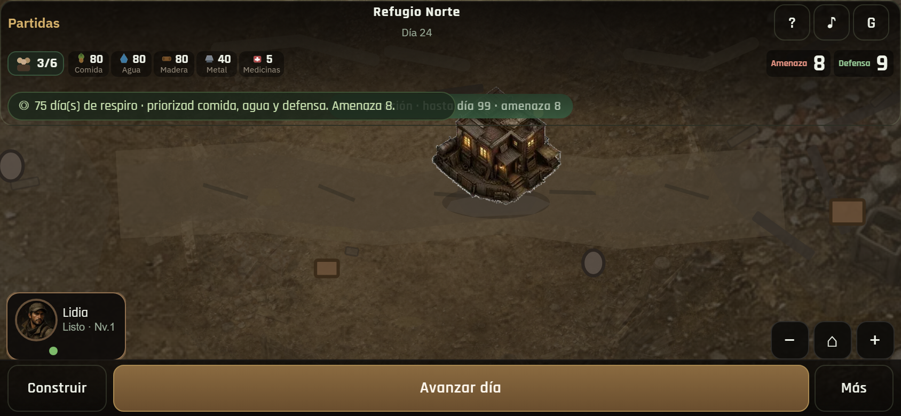
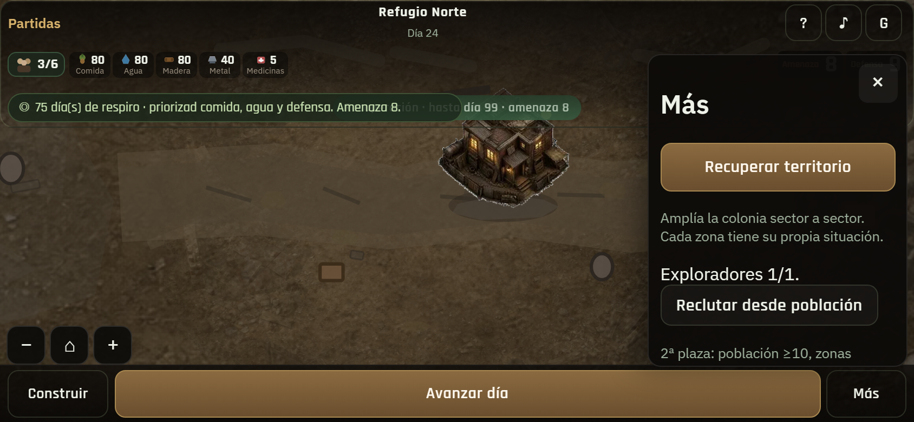
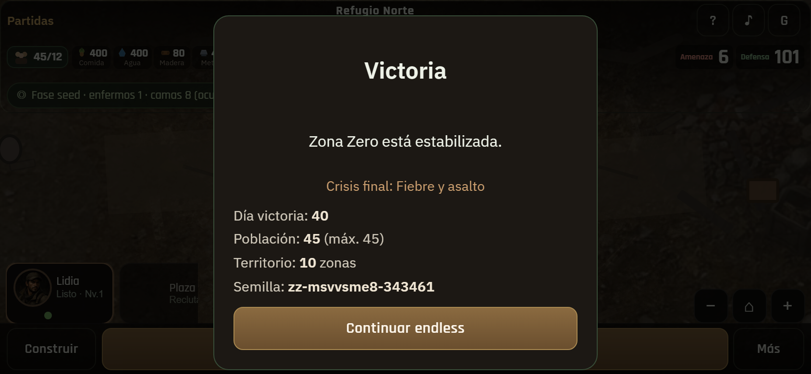
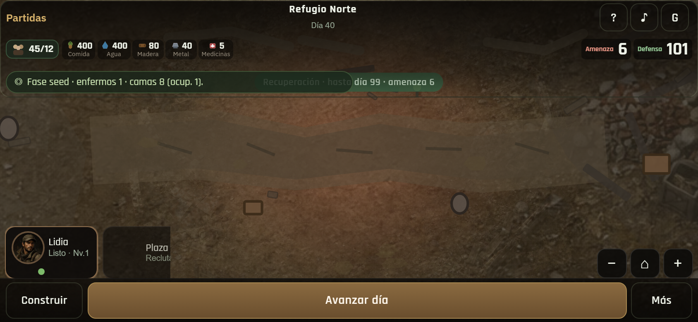
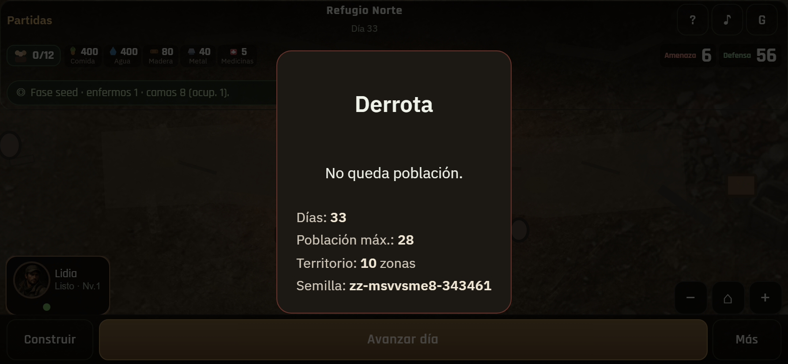
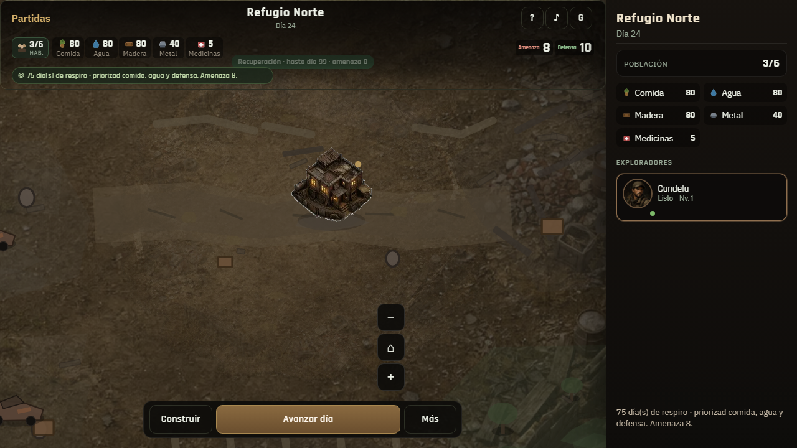
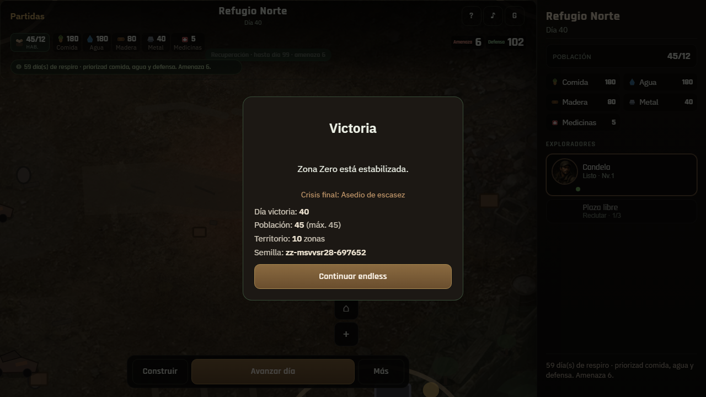
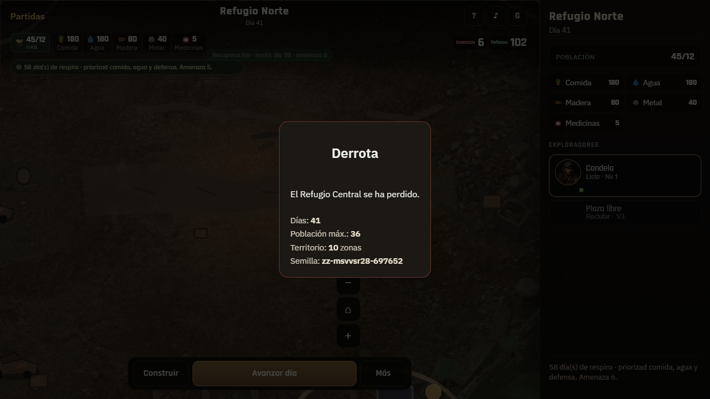
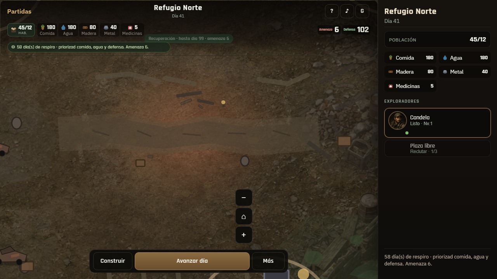

01 · Móvil mapaPartida mid · era indicadores

02 · Más / eraProgresión visible

03 · VictoriaStats + crisis · sin energía

04 · EndlessSigue jugando post-victoria

05 · DerrotaCausa + stats

06 · Desktop mapaEscenario mid-game

07 · Victoria desktopCulminación multi-condición

08 · Derrota desktopHQ perdido

09 · Sin energíaVictoria no exige electricidad
10 · Crisis variableVariante etiquetada en victoria